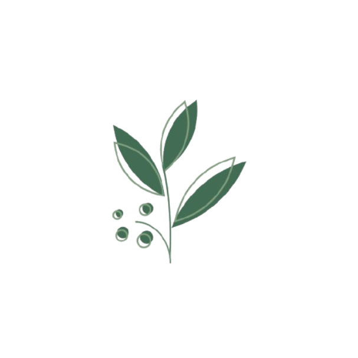
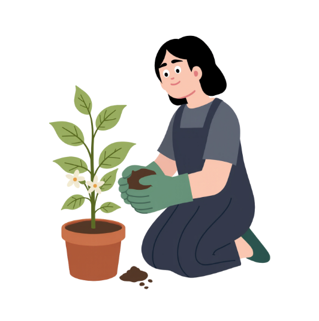

Ora pro Nobis
Pereskia aculeata

Veja as plantas medicinais com segurança. Consulte
fichas técnicas detalhadas de espécies vegetais,
filtre por características e encontre a planta ideal para cada projeto plantio.

Ora pro Nobis
Pereskia aculeata